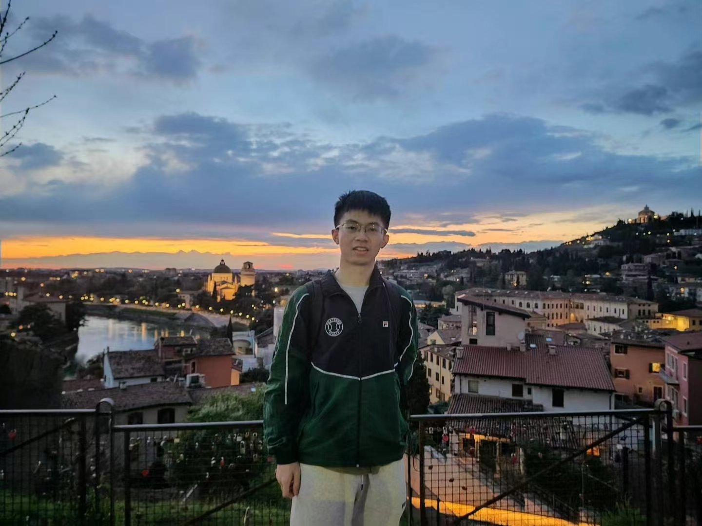

|
 |
About MeI am a first year PhD student at the MIT Center for Computational Science and Engineering (CCSE). I received my B.S. degree from the School of Mathematical Sciences, Peking University in 2025, with a major in applied and computational mathematics. I am fortunate to work with Professors Asu Özdağlar and Saurabh Amin. |
My research interests lie somewhere at the intersection of optimization, learning, and complexity—currently, mostly on what one might call the theory side.
I also enjoy designing efficient algorithms.
The Geometry of (Mixed-Integer) Linear Program Compression: An Exact Characterization and Learning Algorithm
Working paper.
Parameterized Complexity of Stationarity Testing for Piecewise-Affine Functions and Shallow CNN Losses
arXiv preprint, 2026. [arxiv]
Learning Decision-Sufficient Representations for Linear Optimization
, Saurabh Amin, Asuman Özdağlar
COLT 2026. [arxiv] [conference]
An Online Adaptive Sampling Algorithm for Stochastic Difference-of-convex Optimization with Time-varying Distributions
ICML 2025, oral. [pdf] [conference]
An Online Adaptive Sampling Algorithm for Stochastic Difference-of-convex Optimization with Time-varying Distributions
ICML 2025, oral. [pdf] [conference]
Parameterized Complexity of Stationarity Testing for Piecewise-Affine Functions and Shallow CNN Losses
arXiv preprint, 2026. [arxiv]
Learning Decision-Sufficient Representations for Linear Optimization
, Saurabh Amin, Asuman Özdağlar
COLT 2026. [arxiv] [conference]
The Geometry of (Mixed-Integer) Linear Program Compression: An Exact Characterization and Learning Algorithm
Working paper.
Feel free to reach out to me at:
I like playing chess, while I am struggling to improve my ELO on chess.com. I also play other strategy games.